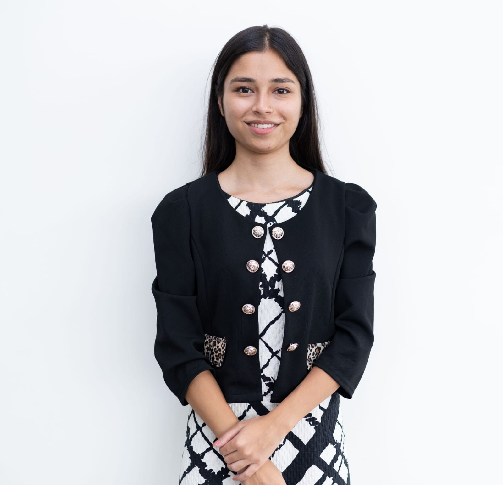

I highly recommend Sanskar Ananta Tiwari for any project or team that requires a strong problem solver and team player. Sanskar possesses exceptional analytical and problem-solving skills that enable him to tackle even the most complex challenges with ease. Moreover, his proficiency in HTML, CSS, and JavaScript is truly remarkable, which makes him an invaluable asset for any web development project. Overall, Sanskar is a highly skilled and dedicated professional who can be trusted to deliver outstanding results every time.
Abhidan Jung Thapa |
Sanskar is a hardworking young man who has a keen interest in learning and exploring new things. Having worked with him in Hult Prize made PR process much easier. He is full of ideas and is passionate in what he does.
|  | Prajolita Bista |
Sanskar is a hardworking, intelligent, and tactful individual who is highly interactive, always open to learning, and eager to share his ideas
Prakash Khanal |


 | The Hult Prize is a start-up accelerator for social entrepreneurship which brings together the brightest college and university students from around the globe to solve the world’s most pressing issues with innovative ideas for sustainable start-up enterprises. Hult Prize TBC facilitates a platform for aspirants of The British College to come forward with their very own startups addressing much needed global scenarios. As a training coordinator for the Hult Prize event, I had the opportunity to develop and deliver training sessions for student teams to enhance their skills in various areas such as ideation, pitching, and business planning. I also had the chance to collaborate with other event organizers, mentors, and industry experts to create a supportive and collaborative environment for the participating teams. Additionally, I learned about the challenges faced by social entrepreneurs and gain valuable insights into the world of start-up accelerators and social entrepreneurship. |